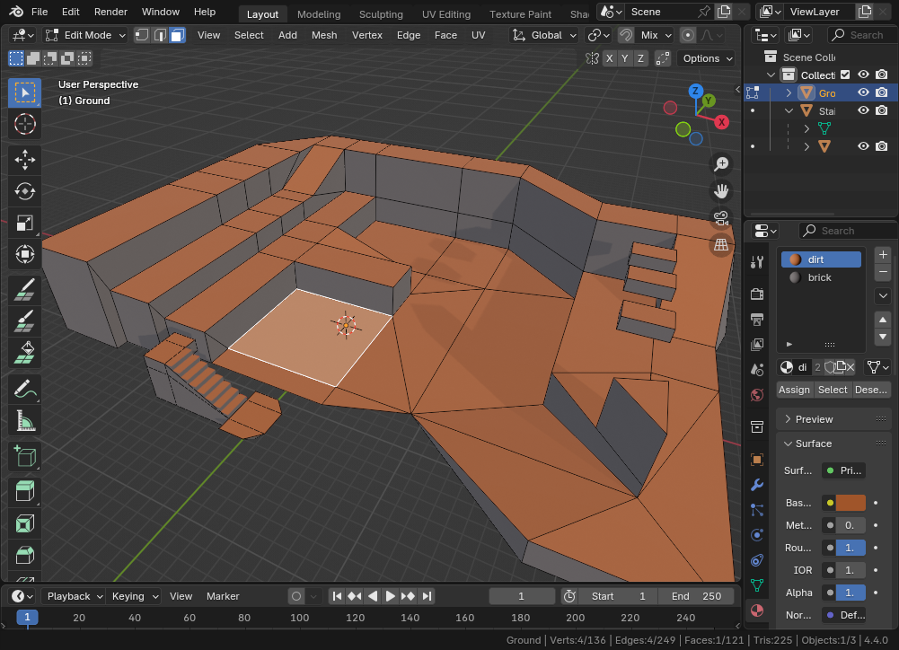
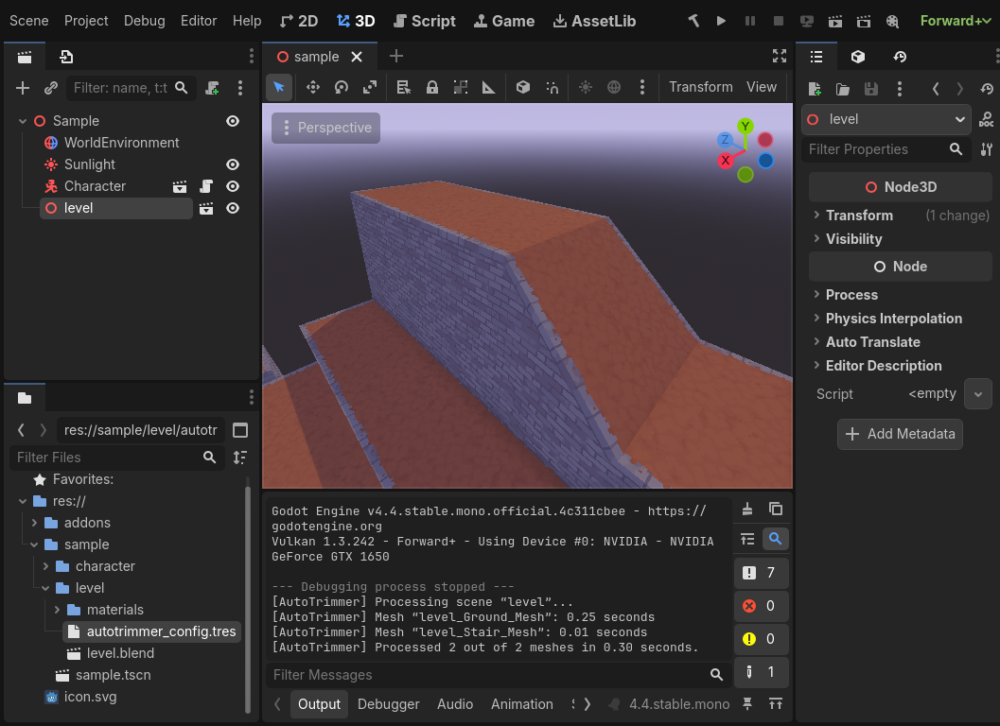
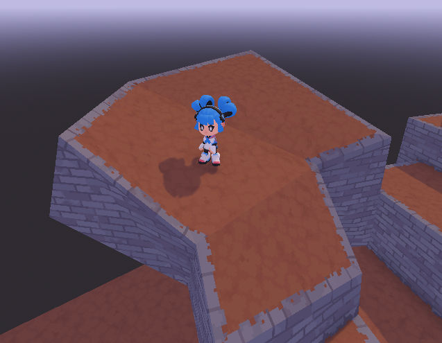

Tutorial 1: Let's Try Out AutoTrimmer by Extending the Sample Project
This tutorial will show you the basics of editing AutoTrimmer levels with Blender. We're starting out by editing the sample project. It's an unusual way to start, but AutoTrimmer can take a bit of work to set it up. This way, we can get going right away.
If you're not experienced with Blender, you're in luck, because it's written for Blender beginners.
Blender
I wrote this tutorial for Blender and you won't be able to follow these instructions without Blender. You don't need to have in-depth knowledge on how to use Blender — I'll explain the things you need to know as we go along.
It's worth noting that AutoTrimmer does not depend on Blender. It only relies
on Godot and is completely independent of the 3D editing software you are using.
However, Godot has some very nice integration for Blender.
You can put .blend files directly into the project, which
is very convenient and saves a lot of hassle exporting 3D files.
The sample project uses a .blend file for its 3D model,
so you won't be able to do this
tutorial without Blender (.blend files can only be opened
with Blender — no other 3D software supports it).
If you haven't used Blender with Godot before, you will have to
change the Godot editor settings so that Godot can find Blender.
Godot needs Blender because, as I said before, no 3D software can work
with .blend files except Blender
(.blend files are too weird to work with).
In the editor settings, search for “Blender” and set “Blender Path” in
FileSystem → Import to where Blender is installed.
On Windows, you need to set it to the .exe file.
Opening the sample scene in Godot
- Make sure that you have the Mono version of Godot 4.4 (or a more recent version of Godot 4). AutoTrimmer requires Mono because it is written in C#. It will not work without the Mono version. (I'm planning to remove the Mono dependency before the beta is over, though)
- Make sure that you have downloaded AutoTrimmer,
and that you put the
AutoTrimmerfolder in a place where you can find it. - In Godot, import and open the Godot project file that you find in the
AutoTrimmerfolder. 4In the Godot editor, open the scenesample.tscnin thesamplefolder.
You should now see the same scene as in the screenshot below. Press the “run current scene” button in the top right corner to try out the sample project.

Editing the level
Now that we have the Godot project running, let's try editing the level.
Your first edit
-
First, open up Blender. The sample project comes with a
level.blendfile which was made in Blender 4.4.0. If you have an older version of Blender it may not always work. -
In Blender, load the
.blendfile. Here's the detailed instructions:- In the top left corner, open the “File” menu, then click “Open...” to open a file.
- Navigate to the AutoTrimmer folder.
- Open
level.blend. You can find it in the folderAutoTrimmer/sample/level. If you have multiple copies of the AutoTrimmer folder, make sure that you open thelevel.blendfrom the Godot project that you have open right now.
-
You should now have the level open in Blender. It should look like the screenshot below.
- Moving the view around in Blender takes some getting used to. By default, you can hold down the middle mouse button to rotate the camera, and move the camera by holding down shift and the middle mouse button at the same time.
- If you ever press the wrong button or click the wrong thing,
remember that you can hold down the
ctrlkey and presszto undo anything you didn't mean to do. If you went a little too far undoing things, you can hold downctrlandshiftand presszto redo the last thing you undid. - In Blender, if you somehow get the camera into a bad position or if the
view starts moving really slowly, you can center the view on an object
by clicking on it and then pressing the period
.key on the number pad. That should put your view back in a good position. - If you don't have a number pad on your keyboard, you can click on the
object and then, near the top-left corner of the screen,
in the second row of menus, open the
Viewmenu and clickFrame selected(it's a little tedious this way)

-
Let's make our first edit.
-
When you first open the model, Blender starts in “object mode” (check the second row in the top-left to see which mode you're in). In object mode you can select objects and move them around in the scene.
-
Click on the main part of the level to select it. It should get an orange outline around it.
-
Now open up edit mode. To do this, in the top-left corner, click on the “object mode” dropdown menu and select “edit mode”. In edit mode, you can change the shape of a 3D model.
-
Blender should now look like in the screenshot below.

-
Select a part of the 3D model by clicking on it.
-
Select the move tool in the tools menu on the left.
-
Three arrows will appear around the thing you selected. Click and drag the blue arrow to move it up or down. There's your first change!

-
Now we're going to look at what AutoTrimmer will do with your change in Godot. Save the file by opening the
Filemenu in the top left and clickingSave.
-
-
Back in Godot, let's see what's changed. After saving the
.blendfile and opening the Godot window, you can see the results of your change. As you can (hopefully) see, your edited part of the level is now decorated just the same way as the rest of the level.
Adding some platforms
Now, let's add some platforms for the character to jump on.
-
First we'll make a single platform.
- In Blender and still in edit mode,
click the
Addmenu (to the right ofEdit Mode) and clickCube. You should now see your new cube, but if you don't, press.on the number pad to focus on it. This cube is going to become our new platform. - Move the cube wherever you like using the move tool.
- You can use the scale tool to change the cube's shape into something that looks a little more like a normal platform in a normal platformer game. You can find the scale tool a little bit below the move tool (it's the icon with a growing square).
- In Blender and still in edit mode,
click the
-
If you save it and go back to Godot, you'll see something like the screenshot below. It will already work as a platform and you can already make the character jump on it. It's just not very nicely decorated yet.

-
Let's add some brick textures to the sides of the platform.
-
Back in Blender and still in edit mode, click one of the sides of the platform to select it. Then select the other sides by holding down
shiftand clicking on them. Also select the bottom, but don't select the top, because we want the top to stay as dirt. -
Now change their material to “brick” by clicking the buttons in the screenshot below. The sides should become grey, like all the other brick surfaces.

-
Save the Blender file and let's look at it again in Godot.
-
-
Going back to Godot, your platform should now look like the screenshot below. Looks a lot better!

If you want, you can add a couple more platforms, and maybe make some other shapes instead of just rectangles. Here are some hints on how to do that:
- Remember that you can click to select something and
shift + clickto add to your selection. - Hovering your mouse over the platform, press
Lto select the whole platform. - You can make a copy of your platform with
shift + D. Move it around with the move tool. - Next to the “edit mode” dropdown, you can see three buttons. These allow you to edit vertices (corners), edges or faces. Move around some edges or vertices to make your shape a little less square.
- If you hover the mouse over a tool for a second, Blender will tell you that tool's name.
- Try to find the extrude tool — it's a very important tool. It's a little difficult to clearly describe what it does in words, The extrude tool lets you pull new geometry out of your selection.
I'm not going to give a full Blender tutorial (as you can probably see yourself, it's too much for one tutorial). I do give a few tips in the workflow article.
AutoTrimmer is made to work with any weird shape you can think of, so go wild. If it somehow doesn't work in AutoTrimmer, that's probably an AutoTrimmer problem, not a you problem!

That's the end of this tutorial. If you're ready to move on, you can go on to tutorial 2, where we'll add a new grass surface to the sample level.